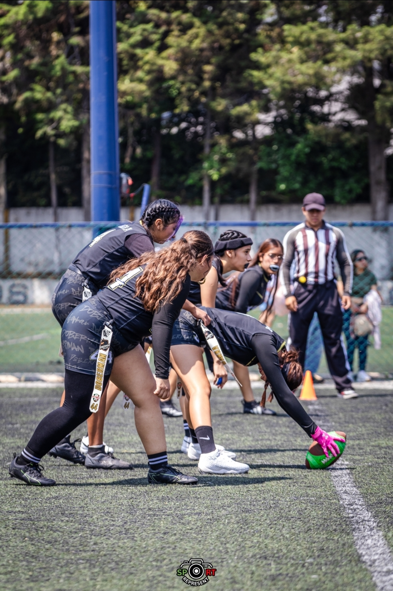

Bienvenido a mi pagina sobre mi deporte favorito que es el flag footbal
Es un deporte de alto rendimiento que es como el footbal americano pero sin contacto,se trata de tener dos banderas a a la cadera para que cuando las quiten ahi se acaba la jugada
Elegi este tema porque es un deporte que practico y que me gusta mucho ya que se me hace un deporte muy movido y que no solo es el ejercicio si no tambien es de pensar en que jugadas hacer para ganar, este deporte es muy importante para mi porque me ha hecho mas diciplinada y sobre todo me ha enseñado a jamas rendirme

Nacio durante la segunda guerra mundial como forma de entrenamiento y recreacion para los soldados estadounidenses en bases como Fort Meade, Mariland antes de popularisarse al terminar el conflicto
Otro dato interesante es que está prohibido taclear, bloquear o empujar. Para detener al rival que lleva el balón, la defensa solo debe quitarle uno de los dos banderines (flags) que lleva en la cintura.
Elegi este tema porque es un deporte que me encanta practicar ya que es muy dinamico y divertido aligualque es un deporte de alto rendimiento que me hace llegar a mis limites.Lo que mas me gusta de este deporte es que a pesar de lo malo que pase me ha enseñado a no rendirme jamas tambien de que es un deporte que conlleva mucho trabajo en equipo. Lo que aprendi investigando fue que este deporte es algo demandante y que ya se esta haciendo mas reconocido,es un deporte increible.